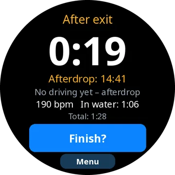

Cold Dip
Моржевание, холодные купания и сауна — со временем на часах Amazfit, с пульсом, GPS и историей.
Приложение уже отправлено и ждёт проверки. Когда его примут, эта кнопка откроет страницу в Zepp App Store.
7 дней бесплатно со всеми функциями, затем разовая разблокировка за 4,99 USD через KiezelPay. Без подписки.
Как это работает
Коротко об одной сессии: от стартового экрана до самочувствия после выхода.
Посмотрите сессию
- Откройте Cold Dip на берегу. Задайте температуру воды кнопками − / + и нажмите START.
- На берегу: таймер идёт, пока вы готовитесь. Нажмите, когда входите в воду.
- В воде: время в воде, пульс, температура воды и GPS при плавании в открытой воде. Нажмите, когда выходите.
- После выхода: время с момента выхода из воды и обратный отсчёт согревания (afterdrop).
- Сауна, если вы ею пользуетесь: приложение считает раунд, затем можно вернуться в воду или закончить.
- Самочувствие, 1–5, и сохранение. История и рекорды остаются на часах.
Снимки экрана
Та же сессия на круглых и прямоугольных часах Amazfit.
Круглые часы

Старт 
На берегу 
В воде 
После выхода 
Сауна 
Самочувствие
Прямоугольные часы

Старт 
На берегу 
В воде 
После выхода 
Сауна 
Самочувствие
Цена
Оплачивается всё приложение — отдельной разблокировки «Pro» позже нет.
- 7 дней бесплатно со всеми функциями, с первого открытия приложения.
- Затем разовая разблокировка за 4,99 USD через KiezelPay (kzl.io). Часы показывают код; вы платите в браузере.
- Без подписки. Приложение не видит данные карты. Оплату обрабатывает KiezelPay.
Поддерживаемые часы Amazfit
Cold Dip работает на Zepp OS 3 (API 3.0) и новее. Точный список моделей появится в магазине, когда Zepp примет пакет.
- Balance Balance, Balance 2, Balance 2 XT, Balance 3, Balance Ultra
- Active Active, Active 2 (round and square), Active 3 Premium, Active Edge, Active Max
- T-Rex T-Rex 3, T-Rex 3 Pro, T-Rex Ultra, T-Rex Ultra 2
- Cheetah Cheetah (round and square), Cheetah Pro, Cheetah 2 Pro, Cheetah 2 Ultra
- GTR / GTS / Falcon GTR 4, GTS 4, Falcon
- Bip Bip 5 Unity, Bip 6, Bip Max
У Bip 5 Unity нет GPS. В профилях с маршрутом будет «поиск GPS…»; остальное приложение работает.
Не поддерживаются (более старый Zepp OS): GTR 3, GTS 3, GTS 4 Mini, GTR Mini, Bip 5 (модель без Unity), T-Rex 2 и Band 7.
Конфиденциальность и погода
Нет аккаунта, аналитики и рекламы. Пульс, GPS и история сессий остаются на часах.
Когда телефон подключён, погода (температура воздуха, ветер, условия) берётся из MET Norway Locationforecast 2.0 по лицензии CC BY 4.0. На api.met.no отправляется только приблизительная позиция. Источник: © MET Norway (CC BY 4.0).